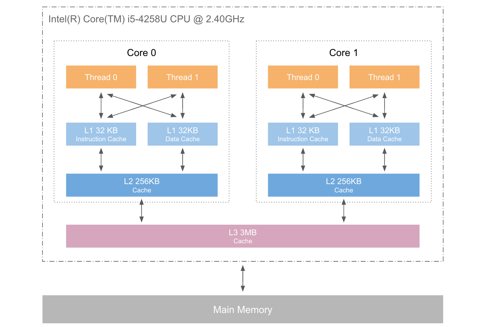
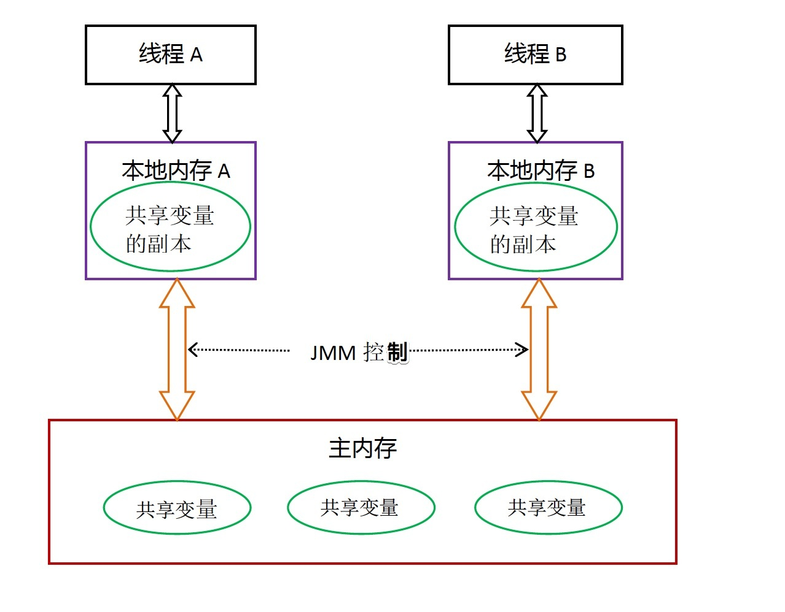

概述
关键字volatitle是Java虚拟机提供最轻量的同步机制，当一个变量被volatile定义之后，具备两种语义：
- 被volatile定义变量对所有的线程可见
- volatitle第二个语义是禁止指令重拍优化
【注】volatile不能保证原子性，这个比较简单，但是面试的时候面试官喜欢问。
volatile保证可见性
volatile的写
在x86处理器下通过工具获取JIT编译器生成的汇编指令来看看对Volatile进行写操作CPU会做什么事情。
|
Java代码： |
instance = new Singleton();//instance是volatile变量 |
|
汇编代码： |
0x01a3de1d: movb $0x0,0x1104800(%esi); 0x01a3de24: lock addl $0x0,(%esp); |
addl $0x0,(%esp)（把ESP寄存器的值加0）显然是一个空操作（采用这个空操作而不是空操作指令nop是因为IA32手册规定lock前缀不允许配合nop指令使用），关键在于lock前缀，查询IA32手册，它的作用使得本CPU的Cache写入内存，该写入动作也会引起别的CPU或者别的内核无效化（Invalidate）其Cache。

这里涉及到CPU缓存一致性协议的相关知识点。扩展阅读见：
volatile的读
volatile的写操作通过lock addl $0x0,(%esp)这条指令能保证所有的CPU和其Cache里关于变量的脏数据。实际上是通过CPU缓存一致性协议保证，这个协议无法保证JMM缓存一致。也就是说JVM本地内存里面可能还有有关于volatile变量的旧数据。

要保证JVM不会读到旧数据，就要涉及到volatile的读了。
volatile读的内存语义如下：
当读一个volatile变量时，JMM会把该线程对应的本地内存置为无效。线程接下来将从主内存中读取共享变量。
volatile禁止指令重排
预备知识
重排序
在执行程序时为了提高性能，编译器和处理器常常会对指令做重排序。重排序分三种类型：
- 编译器优化的重排序。编译器在不改变单线程程序语义的前提下，可以重新安排语句的执行顺序。
- 指令级并行的重排序。现代处理器采用了指令级并行技术（Instruction-Level Parallelism， ILP）来将多条指令重叠执行。如果不存在数据依赖性，处理器可以改变语句对应机器指令的执行顺序。
- 内存系统的重排序。由于处理器使用缓存和读/写缓冲区，这使得加载和存储操作看上去可能是在乱序执行。
从java源代码到最终实际执行的指令序列，会分别经历下面三种重排序：

处理器重排序与内存屏障指令
为了保证内存可见性，java编译器在生成指令序列的适当位置会插入内存屏障指令来禁止特定类型的处理器重排序。JMM把内存屏障指令分为下列四类：屏障类型 指令示例 说明 LoadLoad Barriers Load1; LoadLoad; Load2 确保Load1数据的装载，之前于Load2及所有后续装载指令的装载。 StoreStore Barriers Store1; StoreStore; Store2 确保Store1数据对其他处理器可见（刷新到内存），之前于Store2及所有后续存储指令的存储。 LoadStore Barriers Load1; LoadStore; Store2 确保Load1数据装载，之前于Store2及所有后续的存储指令刷新到内存。 StoreLoad Barriers Store1; StoreLoad; Load2 确保Store1数据对其他处理器变得可见（指刷新到内存），之前于Load2及所有后续装载指令的装载。StoreLoad Barriers会使该屏障之前的所有内存访问指令（存储和装载指令）完成之后，才执行该屏障之后的内存访问指令。
volatile内存语义的实现
下面是JMM针对编译器制定的volatile重排序规则表：
| 是否能重排序 | 第二个操作 | ||
| 第一个操作 | 普通读/写 | volatile读 | volatile写 |
| 普通读/写 | NO | ||
| volatile读 | NO | NO | NO |
| volatile写 | NO | NO | |
- 在每个volatile写操作的前面插入一个StoreStore屏障。
- 在每个volatile写操作的后面插入一个StoreLoad屏障。
- 在每个volatile读操作的后面插入一个LoadLoad屏障。
- 在每个volatile读操作的后面插入一个LoadStore屏障。
上述内存屏障插入策略非常保守，但它可以保证在任意处理器平台，任意的程序中都能得到正确的volatile内存语义。
volatile的扩展应用
单例模式
|
|
补充：单例模式还有一种基于类初始化的解决方案，详见：
双重检查锁定与延迟初始化
LinkedTransferQueue关于volatile的优化
著名的Java并发编程大师Doug lea在JDK7的并发包里新增一个队列集合类LinkedTransferQueue，他在使用Volatile变量时，用一种追加字节的方式来优化队列出队和入队的性能。
追加字节能优化性能？这种方式看起来很神奇，但如果深入理解处理器架构就能理解其中的奥秘。让我们先来看看LinkedTransferQueue这个类，它使用一个内部类类型来定义队列的头队列（Head）和尾节点（tail），而这个内部类PaddedAtomicReference相对于父类AtomicReference只做了一件事情，就将共享变量追加到64字节。我们可以来计算下，一个对象的引用占4个字节，它追加了15个变量共占60个字节，再加上父类的Value变量，一共64个字节。
|
|
为什么追加64字节能够提高并发编程的效率呢？ 因为对于英特尔酷睿i7，酷睿， Atom和NetBurst， Core Solo和Pentium M处理器的L1，L2或L3缓存的高速缓存行是64个字节宽，不支持部分填充缓存行，这意味着如果队列的头节点和尾节点都不足64字节的话，处理器会将它们都读到同一个高速缓存行中，在多处理器下每个处理器都会缓存同样的头尾节点，当一个处理器试图修改头接点时会将整个缓存行锁定，那么在缓存一致性机制的作用下，会导致其他处理器不能访问自己高速缓存中的尾节点，而队列的入队和出队操作是需要不停修改头接点和尾节点，所以在多处理器的情况下将会严重影响到队列的入队和出队效率。Doug lea使用追加到64字节的方式来填满高速缓冲区的缓存行，避免头接点和尾节点加载到同一个缓存行，使得头尾节点在修改时不会互相锁定。
那么是不是在使用Volatile变量时都应该追加到64字节呢？不是的。在两种场景下不应该使用这种方式。第一：缓存行非64字节宽的处理器，如P6系列和奔腾处理器，它们的L1和L2高速缓存行是32个字节宽。第二：共享变量不会被频繁的写。因为使用追加字节的方式需要处理器读取更多的字节到高速缓冲区，这本身就会带来一定的性能消耗，共享变量如果不被频繁写的话，锁的几率也非常小，就没必要通过追加字节的方式来避免相互锁定。
【注】同样的缓存行填充技术也被应用的disruptor队列用来提升性能。
参考文档
https://www.ibm.com/developerworks/cn/java/j-jtp06197.html http://www.infoq.com/cn/articles/ftf-java-volatile http://www.infoq.com/cn/articles/java-memory-model-4 http://www.infoq.com/cn/articles/double-checked-locking-with-delay-initialization